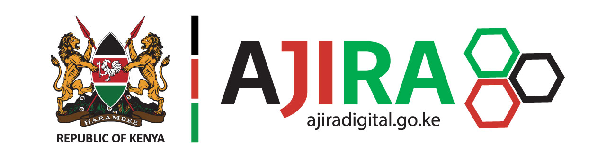
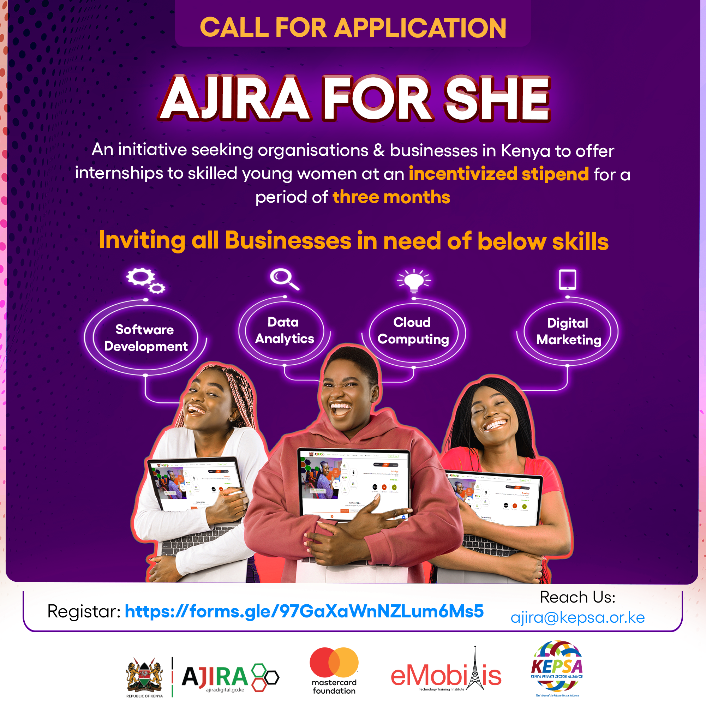
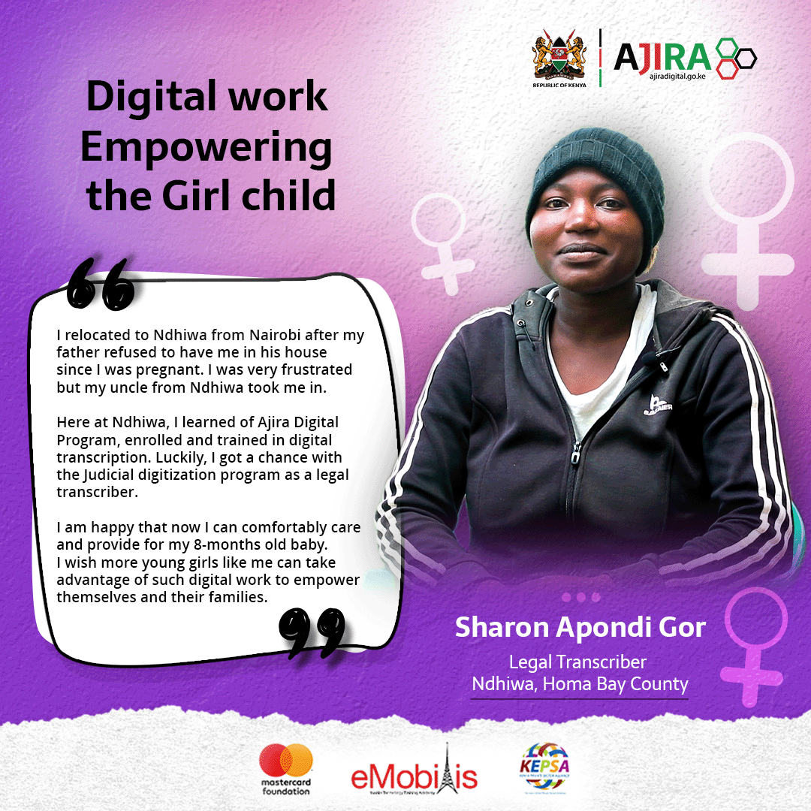

01 / National Programme
Ajira Digital
National digital-employment communication
across campaign, OOH, social, events, photography and video.
The communication challenge
Make a complex youth employment programme easier to see, understand and engage with.
The work combined communication strategy with an integrated creative system — campaign visuals, event assets, OOH materials, social content and multimedia storytelling supporting a national programme across Kenya.
Campaign
StrategyBrand
SystemsOOHPhotographyVideoSocial
Content
Selected footprint
47
Counties
486K+
Selected Reach
200+
Events

